九州の玄関口、福岡。
程よい都会と、隣り合わせのたくさんの自然が
魅力的なこの都市は近年移住者も増えてきている。
東京や大阪に比べると、
格段にコンパクトなこの街には、
少し場所を変えるだけで、
たくさんのおさんぽスポットが詰まっている。
日頃の喧騒を忘れて、ふたりでおさんぽしに来ませんか？
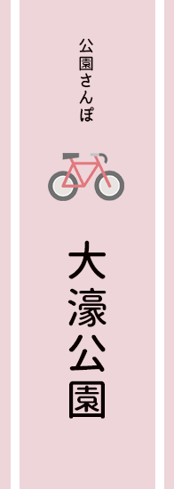
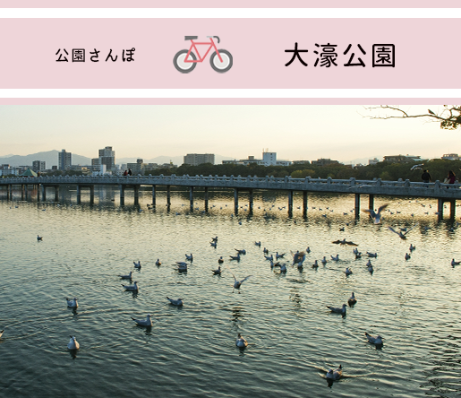
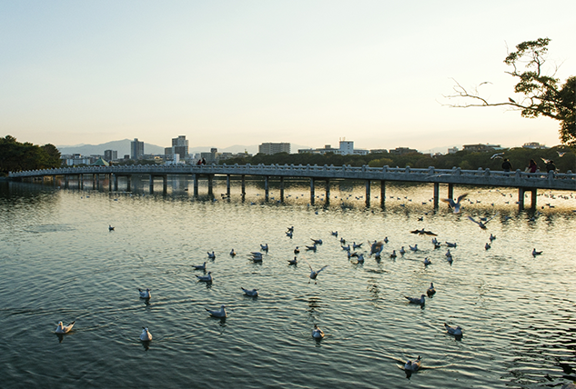
地下鉄で、博多からは５駅9分、天神からは２駅4分で到着する、福岡のセントラルパーク（ネーミングがダサい）大濠公園。ここは福岡でも随一のデートスポットだ。
朝デートなら、絶対に大濠公園がおすすめ。近くのパン屋で朝ごはんを買い、公園のベンチで食べる。そんなシーンがなにかのドラマでもあったっけ？池に住む、鯉や亀、様々な鳥たちを見ながらまったりする時間は格別。最高の1日の幕開けだ。
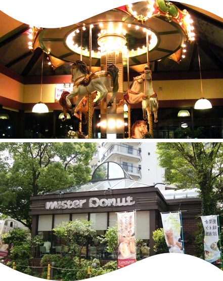
ここは、ただミスドのじゃない。可愛さが尋常だ。今となっては珍しい、建物まるまるミスドなのである。
このような店舗は、バブル期に展開されたが、現在生き残っているのは全国で３店舗だけだそう。80年代のアメリカの遊園地をイメージしたような店内の装飾は、ふたりが可愛い写真をとるためにあるかのよう。
外気が厳しいときにはミスドでまったり朝ごはんもあり。
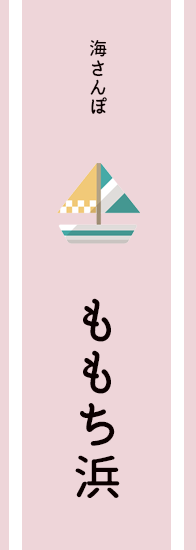
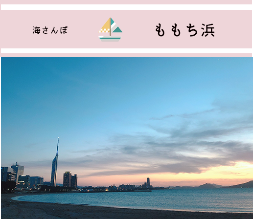
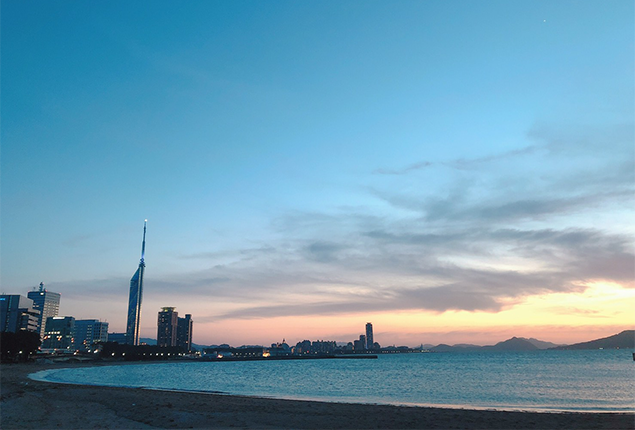
『福岡』と検索すればだいたい出てくる、ドームとタワーと海の写真。
この海が「ももち浜」である。地下鉄「唐人町」から約徒歩15分、バスは各所から出ている。
ももち浜さんぽに行くなら、俄然夕方がおすすめである。日が落ちていくタイミングで現れる、あらゆる色の空。オレンジの日もあればピンクや紫の日もある、美しい夕空は言葉に換え難い。近くのコンビニで買った缶ビールをだらりと飲みながら、ふたりで眺める夕日は、最高でしかない。
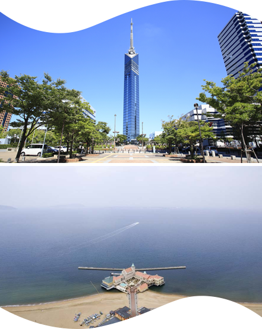
福岡のシンボル、「福岡タワー」。
全国各地のタワーの類に比べると、一見ビルの様でタワーらしくはないが、れっきとした福岡の観光名所タワーである。
とはいえ、人は多くなく穴場だ。ふたりでだらだら景色を見るにはうってつけである。
夜は毎日イルミネーションが彩られ、季節によって異なる柄は福岡市民を楽しませている。中からの景色を楽しんだ後は、外からの景色も楽しんでほしい。
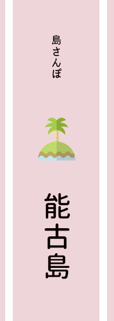
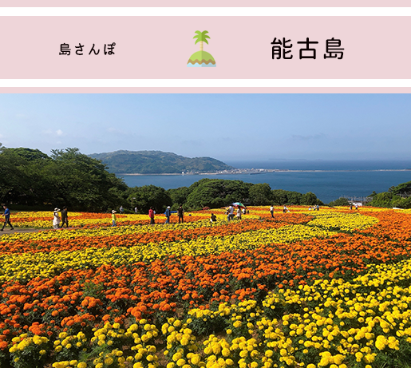
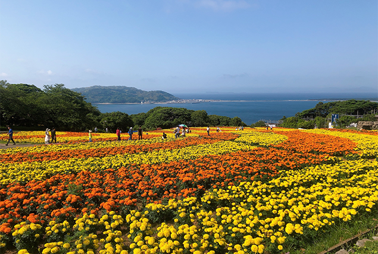
こちらは、1日かけてのゆっくりさんぽスポット「能古島」。
天神/博多からバスで約20分かけて渡船場へ行き、そこから約5分船に乗り到着するのがここ、「能古島」である。ちょっと船に乗るだけで、時空が変わった様な感覚を味わえるレトロな島だ。
メインスポットは「能古島アイランドパーク」。季節によって様々な植物を楽しめる公園だ。たくさんのお花と海のコラボレーションが目に飛び込んだ瞬間、心が大踊りし始める。ふたりでたくさん写真をとって、アルバムに残せば、いつ見返しても華やかな思い出が残る。
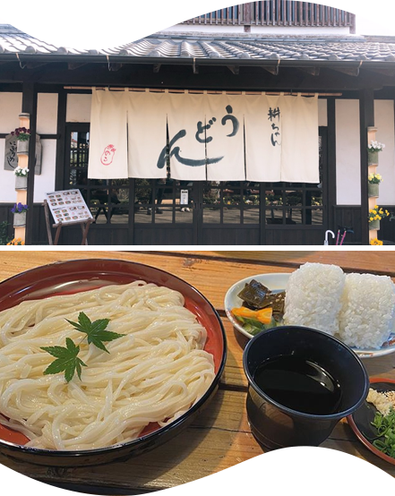
能古島名物、「能古うどん」。
細麺でコシのあるうどんは、ほどよいのどごしがたまらない。冬は釜揚げ、夏は冷やしを食べたいかな。
市内にも店舗をだしており、福岡市民にも馴染み深い能古うどん。どうせなら発祥の地で食べたいものだ。公園内に店舗を構える「耕ちゃんうどん」。歩き疲れた頃、ちょっと休憩におすすめだ。
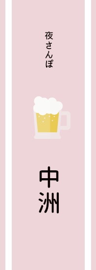
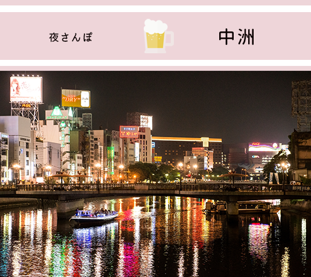
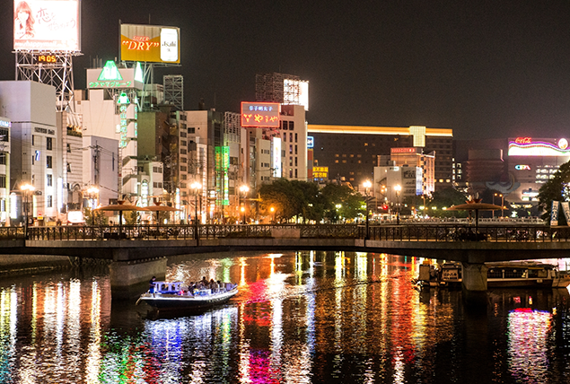
福岡の夜の街、中洲。天神との境にある、那珂川沿いは絶好の夜のさんぽ道だ。
華やかなネオンとお姉さんたち、名物の屋台軍、客引きのお兄さん etc...カオスな街だけど、それもふたりで見るとなんだかとても楽しい。
実はこの街には、福岡のお手頃な美味しいご飯や、軒を連ねる。桝本の辛麺、山ちゃんの胡麻鯖、月や、一双、一蘭、海鳴などの福岡を代表するラーメンたち、桃園の手羽先、お通の雑炊、酒一番のカレー鍋、元祖鉄鍋餃子etc..挙げ始めたらキリがない。グルメ食べ歩きに夜の中洲へぜひ。
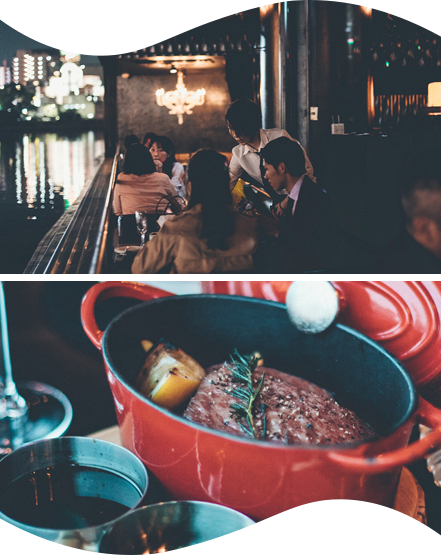
「ふたりが楽しめる中洲スポット」と言われれば、1番に思い浮かぶのが、ここMitsubachiだ。お酒も料理も楽しめ、全長30メートルもある開放的なリバービューが、中洲感を味わえる。静かでもなく、うるさくもなく、高くもなく、安くもなく、はじめてでも楽しめる夜の店という感じではないだろうか。
1日の締めはぜひこちらにて。
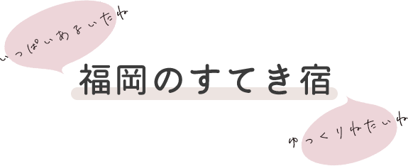
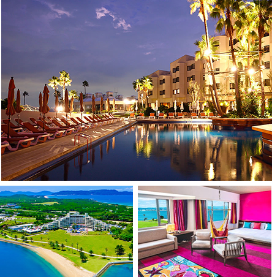
中心街から車で約20分、国定公園「海の中道」内に位置するこのホテルは、海・空・光・緑が織りなす自然の絶景に囲まれながら、ラグジュアリーな非日常の空間を味わえる。
季節に合わせたイベントやアクティビティも豊富で、このホテルだけで1日過ごせちゃいそう。周りには、公園や水族館、動物園など施設も充実。
博多駅から無料のシャトルバスも出ているので、交通アクセスもGOOD。
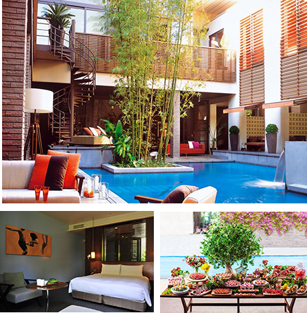
こちらは博多駅から徒歩5分の場所にある、都市の中心部にありながら、喧騒から解き放たれたアーバンリゾートホテル。
一歩足を踏み入れると、そこには贅沢な癒しの空間が広がる。インテリア、音楽、アート、料理…。
こちらのホテルの目玉はなんといって料理。博多近郊の旬な食材を厳選し、素材の魅力を生かした味付けで、洗練された料理たちを楽しめる。
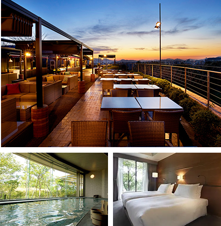
博多駅から車で15分、名前の通り山の上にあるホテル。
喧噪から離れた高台の木々に囲まれた、市内を一望できる随一のロケーションに位置する。和室や天然温水浴場を備えた、旅館スタイルの寛ぎがここにある。
博多駅から無料シャトルバスも出ているので、アクセスはご心配なく。